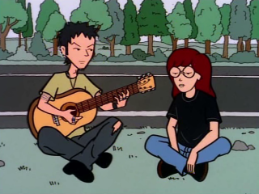

Episode Guide
Episode Guide
|  |
Road Worrier Episode #111 - July 7, 1997 Written by Anne D. Bernstein Song List Entries For This Episode Oops! List Entries For This Episode Transcript For This Episode |
|
Previous "The Big House" (#110) |
Next "The Teachings of Don Jake" (#112) |
|
Cast |
|---|
|
Regular:
Daria,
Quinn,
Helen,
Jake,
Jane,
Trent,
Brittany,
Kevin,
Jodie,
Mack,
Sandi,
Stacy,
Tiffany,
Joey,
Jeffy,
Jamie,
Jesse
Guest: Sue the Waitress Non-Speaking: None |
|
Plot |
|
Summary:
Daria and Jane tag along with Trent and Jesse to the Alternapalooza rock concert, a trip where Daria is forced to deal with her crush on Trent. |
|
Interesting Tidbits |
Continuity:
|
|
Memorable Quotes |
|
Jane - Come on, Daria. Let's go complain about the noise, hmm? Daria - I don't find it a problem. Um, I have unusually sturdy eardrums? Jane - I think Trent's band might have an opening for a fly girl. (grabs Daria by the arm as she leaves the room) Daria - I think I might have an opening for a new friend. Daria - "Mystik Spiral"? Jane - Trent's band. Daria - Sounds like one of those Doors cover bands that play brew pubs. Trent - Hey, Daria. Daria - (VO) Can't speak... must speak... (spoken) Hey. Trent - Whadda ya think of the song? Daria - (VO) It has a beat and you can dance to it, if you have no shame. (spoken) Cool. Trent - Would it help if we spelled mystik with two Y's? Daria - (VO) And I'll spell my name D-A-R-Y-A and be crowned Miss America. (spoken) It might. Helen - Quinn, what is that thing on your arm? (points at tattoo on Quinn's arm) Quinn - Don't worry, Mom. It's fake. Daria - Aww, you got a tattoo to match your personality. Helen - Your father went to one of the most famous festivals of the decade. Quinn - Woodstock? Jake - Altamont! Terrible tragedy, but I demanded my money back and I got it. Daria - Wasn't Altamont free? Jake - (laughs) That's the same line they tried to use on me. Jane - ("tough girl" accent) - Yo, hi. I'm Dolores. I'm doing ten to fifteen for armed robbery. What are you in for? Daria - My head hurts. Jane - (still with the accent) The cops did that to you, didn't they? Bastards. Jesse - You'd never catch me in a job like that. Daria (VO) - Because it falls under the category of employment. Trent - Hey man, we're artists. Who knows where we'll be in five years. Daria (VO) - Still living over your parent's garage? Jane (loud whisper) - Say it, Daria. Whatever you're thinking, say it. If you don't, they'll go on like this for hours. Jesse - We've got a vision. Trent - Eyes on the prize, man. Eyes on the prize. Jesse - Yeah, and this guy's not about selling out. Trent - No way. Jane - 'Cause for that to happen, you'd need someone interested in buying. (pause) Well, someone had to pick up the slack! Jane - Well, you're not your usually sunny self. Daria - (scowling) I've got a bump on my head, a bug bite on my arm, a sandwich on my ass... Jane - And all in front of Trent. Daria - Now turn the knife counterclockwise. Daria - (loudly) I shouldn't have had that tea. Jane - (loudly) You have to go? There's some trees over there! Trent - (loudly) What the matter, Daria? You gotta whiz? Jesse - (loudly) What's wrong? Trent - (loudly) It's Daria. She has to pee. Jesse - (loudly) You have to pee, Daria? You can pee behind those trees. See those trees? You can pee behind there! (Daria gets out of van and walks toward trees) Daria - If I'm not back in ten minutes, don't send help. Daria - They're not going to make fun of me? Jane - For peeing in the woods? They're in a band, Daria. Those boys puke on each other on a regular basis. Jesse - (to Trent) That reminds me: you owe me a shirt. Tiffany - Ugh, stretch pants. Everywhere, stretch pants. Stacy - Hey, these are stretch pants! I'm wearing stretch pants! (Stacy panics and starts to hyperventilate; Sandi rushes over, grabs her arms, and shakes) Sandi - They're leggings! They're leggings! (Stacy lets out a high-pitched squeak of relief) Daria - Umm, nice tattoo. Tribal? Trent - Maori. I copied it out of Tattoo World's international issue. Daria - Very graphic, and meaningful. Trent - Yeah, it makes a statement. You know what it is? Daria (VO) - I got a tattoo out of a magazine? Trent - I got a tattoo out of a magazine. (both laugh) Trent - Daria, do you ever feel like maybe you're wasting your life? Daria - Only when I'm awake. Trent - You know, Daria, sometimes it's hard to believe you're in high school. Daria - I find the situation unbelievable myself. |
|
Mike Quinn's Delayed Reaction Review |
|
Speechless:
Daria has a lot of witty comebacks to things that Trent and Jesse were doing but she was afraid to say any of them out loud. How often is she afraid to say anything? Not often. Jane trying to "pick up the slack" was admirable but should have come sooner. When Daria finally does let out a zinger, she is met with an unexpected response: laughter. |